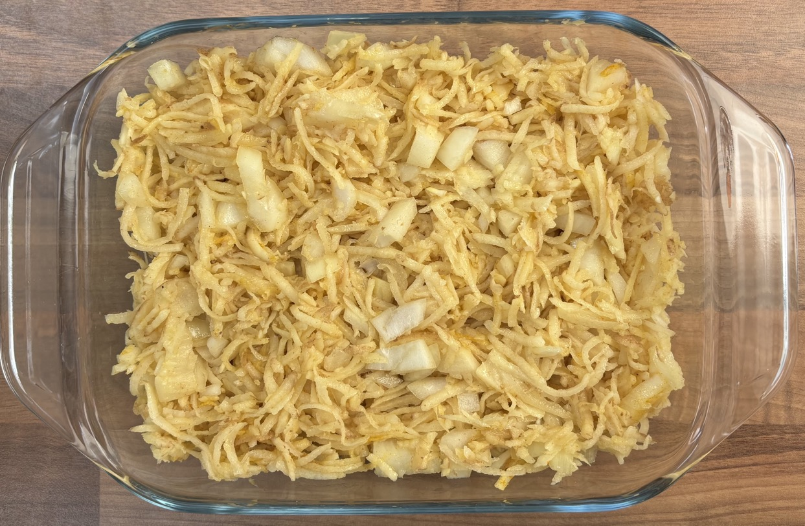

Eggs on potato
- Preheat oven to 180°C
- Stir potato every 10 mins to release steam
- Grate with food processor
- 500g potatoes unpeeled
- Leave for 5 mins
- Wring potato till no more water comes out
- Mix in bowl
- potato
- 1 small onion
- 2 tbsp (27g) vegetable oil
- ½ tsp salt
- ½ tsp cumin
- ¼ tsp turmeric
- Spread into an oiled roasting dish
- Bake at 180°C for 40 mins
- Crack into separate indents in potato
- 2 eggs
- Bake at 180°C for 10-14 mins till eggs cooked
- Scatter with
- coriander leaves chopped
- Aleppo pepper
- black pepper
Serving
- Tomato chutney
- Smoked tofu paella
- 2 portions
Notes
Pics
